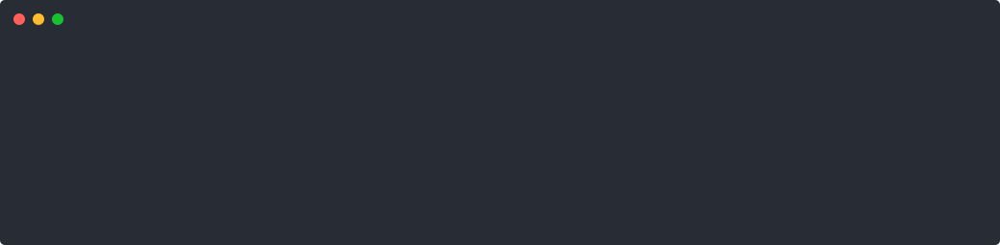

單一入口
lazyai 預設開啟 AGY，也可直接指定 claude 或 codex。
一個 wrapper，統一瀏覽與恢復 AGY、Claude Code、Codex sessions。這是發布前審閱頁，不是正式 release announcement。
lazyai 預設開啟 AGY，也可直接指定 claude 或 codex。
ags、ccs、cxs 都保留，既有肌肉記憶不受影響。
使用者不必安裝 Python、uv、jq 或 fzf；下載 self-contained binary 即可。
lazyai # 使用預設 backend（新安裝為 AGY）
lazyai default codex # 修改並保存預設 backend
lazyai claude -l # 列出 Claude sessions
lazyai codex auth # 搜尋並恢復 session
ags # 等同 lazyai agy
ccs # 等同 lazyai claude
cxs # 等同 lazyai codex以下是實際 binary 安裝進全新隔離 HOME 的輸出，不是手寫的預期畫面。此測試涵蓋 installer、五個 command symlink、shell rc 與三個 backend 都未安裝的 first-run doctor。公開 GitHub Release 尚未建立，因此下載來源在此階段使用本機建置的同一 binary；正式 release 後還需要再驗證一次公開 curl 下載。
$ curl -fsSL https://raw.githubusercontent.com/jimmyliao/lazyaicli/main/install.sh | bash
lazyai installer
✓ linked ~/.local/bin/lazyai
✓ linked ~/.local/bin/lazyaicli
✓ linked ~/.local/bin/ccs
✓ linked ~/.local/bin/ags
✓ linked ~/.local/bin/cxs
Done. Restart your shell or source your shell rc file.
Next steps:
1. Restart Terminal.
2. Check installed AI backends: lazyai doctor
3. Open your session picker: lazyai
$ lazyai doctor
Backend Status Sessions Default CLI
agy missing 0 yes -
claude missing 0 - -
codex missing 0 - -
real isolated installation passed

$ tests/cli_contract.sh cli contract tests passed $ tests/backend_flows.sh AGY → agy --conversation agy-123 Claude → claude --resume claude-123 Codex → codex resume codex-123 backend flow tests passed $ tests/backend_detection.sh 0 / 1 / 2 / 3 installed backends explicit default / vanished default / sessions-only backend detection tests passed $ tests/edge_cases.sh ready / installed-empty / sessions-only / missing corrupt session / invalid config / missing cwd edge case tests passed $ tests/install_binary.sh clean HOME / five binary symlinks / shell integration next-step Terminal instructions / SHA-256 mismatch rejection binary installer tests passed $ go test ./... ok github.com/jimmyliao/lazyaicli/cmd/lazyai $ go vet ./... && gofmt && git diff --check all quality checks passed $ ldd dist/lazyai not a dynamic executable $ lazyai agy -l # real AGY store, read-only 6 valid .db/.pb sessions; .db-wal/.db-shm ignored real AGY integration passed
lazyaidefault / list / doctor 指令體驗